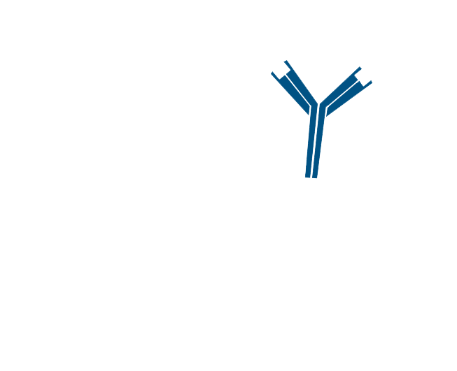
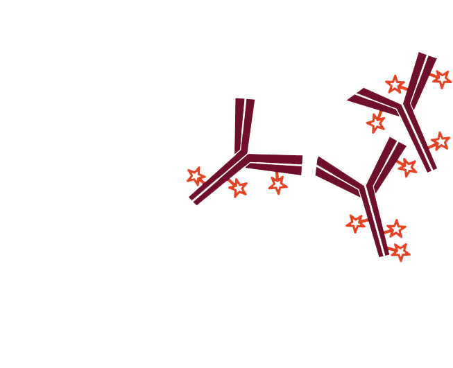
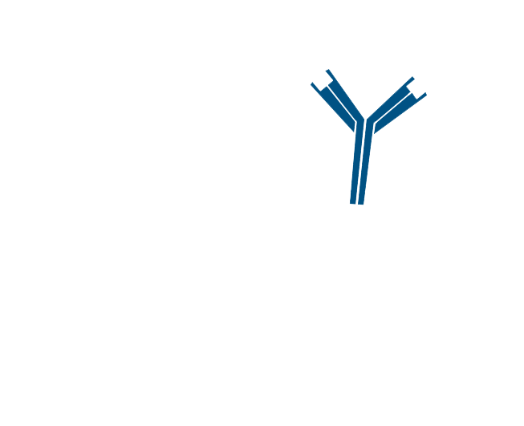
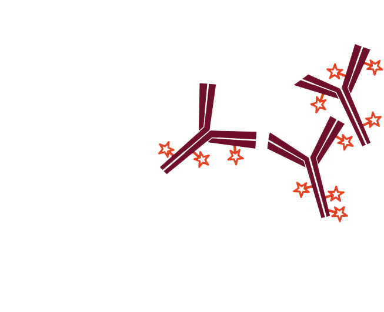

Step 1. After blocking with normal serum, incubate with the first primary antibody, in this example Rabbit Anti-Antigen X. Wash.
Step 2. Incubate with excess conjugated secondary antibody, in this example Alexa Fluor® 488-Fab fragment Goat Anti-Rabbit, lgG (H+L). Wash.
Step 3. Incubate with the second primary antibody, Rabbit Anti-Antigen Y.
Step 4. Incubate with a second conjugated secondary antibody, in this example Rhodamine Red™-X-Goat Anti-Rabbit lgG (H+L). Wash.
Application Notes:
- Monovalent Fab fragments have not been absorbed against other species, so they may cross-react with endogenous lg. Use example C to avoid detection of endogenous lg.
- Example A may require a high concentration of conjugated Fab to saturate the first primary antibody. If this results in unacceptable background, try a lower concentration of the conjugated Fab, followed by further blocking with unconjugated Fab.

Step 1. After blocking with normal serum, incubate with the first primary antibody, in this example Rabbit Anti-Antigen X. Wash.

Step 2. Incubate with excess conjugated secondary antibody, in this example Alexa Fluor® 488-Fab fragment Goat Anti-Rabbit, lgG (H+L). Wash.

Step 3. Incubate with the second primary antibody, Rabbit Anti-Antigen Y.

Step 4. Incubate with a second conjugated secondary antibody, in this example Rhodamine Red™-X-Goat Anti-Rabbit lgG (H+L). Wash.